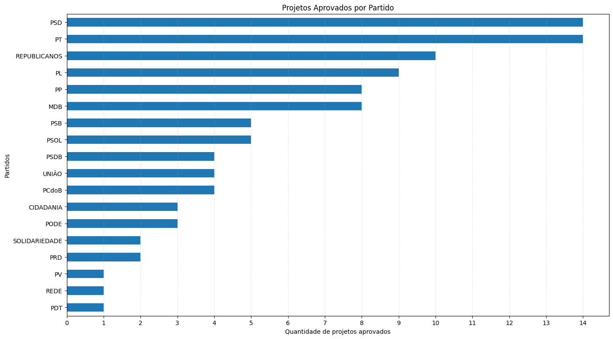
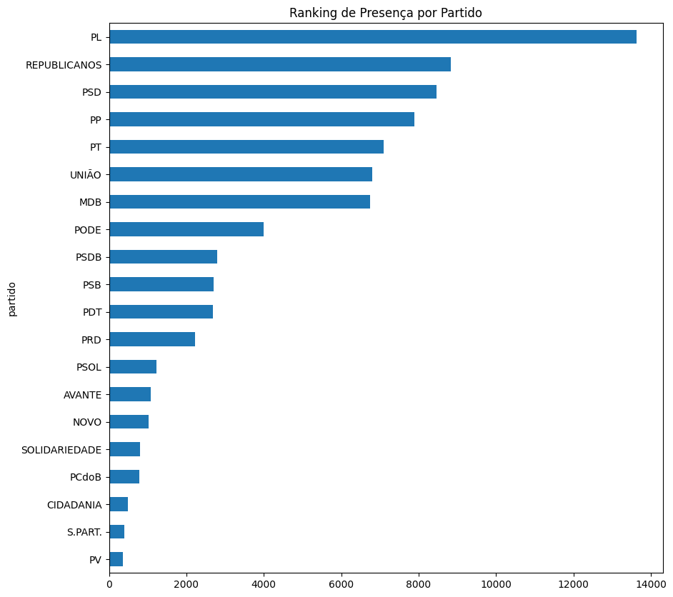
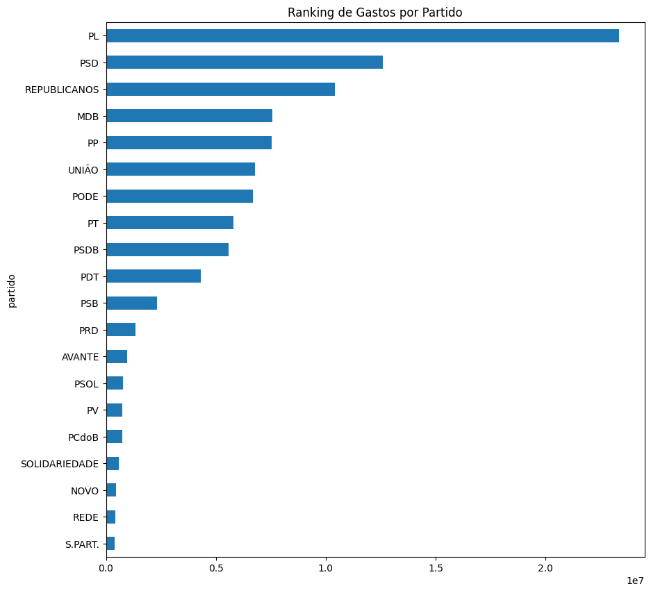

{% extends 'base.html' %}
{% block title %}Gráficos{% endblock %}

    {% block extra_style %}
    <style type="text/tailwindcss">
        .shadow-card {
            box-shadow: 0 4px 20px rgba(0, 0, 0, 0.08);
        }

        /*Filtro de partido e estado */
        .btn-custom-select {
            @apply bg-white border border-gray-200 rounded-full py-2 px-6 flex items-center justify-between min-w-[220px] cursor-pointer hover:bg-gray-50 transition-all text-dark-blue font-medium shadow-sm;
        }

        /* Estilo da lista suspensa */
        .dropdown-select {
            @apply absolute top-full left-0 mt-2 w-full bg-white border border-gray-100 rounded-2xl shadow-xl z-50 overflow-y-auto;
            max-height: 250px;
        }

        .dropdown-select li {
            @apply px-6 py-2 hover:bg-gray-100 cursor-pointer text-dark-blue transition-colors;
        }

        /*Barra de rolagem do dropdown de partido e estado*/
        .dropdown-select::-webkit-scrollbar {
            width: 8px;
        }

        .dropdown-select::-webkit-scrollbar-track {
            @apply bg-gray-50 rounded-r-2xl; /* Fundo da calha da barra */
        }

        .dropdown-select::-webkit-scrollbar-thumb {
            @apply bg-gray-300 rounded-full border-2 border-solid border-gray-50;
        }

        .dropdown-select::-webkit-scrollbar-thumb:hover {
            @apply bg-gray-400; 
        }

    </style>
    {% endblock %}

{% block content %}
    <!--Conteúdo principal-->
    <main class="flex-grow w-full max-w-[100rem] mx-auto ">
    
        <!--Section dos filtros e título da página-->
        <div class="bg-white px-8 py-6 mb-9">

            <section class="mb-6">
                <h1 class="text-3xl font-bold text-dark-blue tracking-tight">GRÁFICOS POR PARTIDO</h1>
            </section>

            <!--FiltroS de estados e partidos-->
            <section class="flex gap-4">
        
                <div class="relative">
                    <button id="btn-estado" class="btn-custom-select">
                        <span class="btn-text">Selecionar estado</span>
                        <svg xmlns="http://www.w3.org/2000/svg" class="h-4 w-4 ml-2" fill="none" viewBox="0 0 24 24" stroke="currentColor">
                            <path stroke-linecap="round" stroke-linejoin="round" stroke-width="2" d="M19 9l-7 7-7-7" />
                        </svg>
                    </button>
                    <ul id="menu-estado" class="dropdown-select hidden ">
                        <li>Acre</li>
                        <li>Alagoas</li>
                        <li>Amapá</li>
                        <li>Amazonas</li>
                        <li>Bahia</li>
                        <li>Ceará</li>
                        <li>Distrito Federal</li>
                        <li>Espírito Santo</li>
                        <li>Goiás</li>
                        <li>Maranhão</li>
                        <li>Mato Grosso</li>
                        <li>Mato Grosso do Sul</li>
                        <li>Minas Gerais</li>
                        <li>Pará</li>
                        <li>Paraíba</li>
                        <li>Paraná</li>
                        <li>Pernambuco</li>
                        <li>Piauí</li>
                        <li>Rio de Janeiro</li>
                        <li>Rio Grande do Norte</li>
                        <li>Rio Grande do Sul</li>
                        <li>Rondônia</li>
                        <li>Roraima</li>
                        <li>Santa Catarina</li>
                        <li>São Paulo</li>
                        <li>Sergipe</li>
                        <li>Tocantins</li>
                    </ul>
                </div>

                <div class="relative">
                    <button id="btn-partido" class="btn-custom-select">
                        <span class="btn-text">Selecionar partido</span>
                        <svg xmlns="http://www.w3.org/2000/svg" class="h-4 w-4 ml-2" fill="none" viewBox="0 0 24 24" stroke="currentColor">
                            <path stroke-linecap="round" stroke-linejoin="round" stroke-width="2" d="M19 9l-7 7-7-7" />
                        </svg>
                    </button>
                    <ul id="menu-partido" class="dropdown-select hidden">
                        <li>AGIR</li>
                        <li>AVANTE</li>
                        <li>CIDADANIA</li>
                        <li>DC</li>
                        <li>DEMOCRATA</li>
                        <li>MDB</li> 
                        <li>MISSÃO</li>
                        <li>MOBILIZA</li>
                        <li>NOVO</li>
                        <li>PCB</li>
                        <li>PCdoB</li>
                        <li>PCO</li>
                        <li>PDT</li>
                        <li>PL</li>
                        <li>PT</li>
                        <li>PSB</li>
                        <li>PSD</li>
                        <li>PSDB</li>
                        <li>PSOL</li>
                        <li>PSTU</li>
                        <li>PODE</li>
                        <li>PP</li>
                        <li>PRD</li>
                        <li>PRTB</li>
                        <li>PV</li>
                        <li>REDE</li>
                        <li>REPUBLICANOS</li>
                        <li>SOLIDARIEDADE</li>
                        <li>UNIÃO</li>
                        <li>UP</li>
                    </ul>
                </div>
            </section>
        </div>
        


        <!--Gráficos (imagens representativas)-->
        <section class="bg-white p-8 rounded-2xl shadow-card m-8">
            <h2 class="text-xl font-bold text-dark-blue mb-6 flex items-baseline gap-2">
                Projetos aprovados <span class="text-dark-blue font-normal text-lg">por partido</span>
            </h2>
            <div class="w-full">
                
            </div>
        </section>

        <section class="grid grid-cols-1 lg:grid-cols-2 sm:grid-cols-1 md:grid-cols-1 gap-8 m-8">
            
            <div class="bg-white p-8 rounded-2xl shadow-card">
                <h2 class="text-xl font-bold text-dark-blue mb-6 flex items-baseline gap-2">
                    Presença <span class="text-dark-blue font-normal text-lg">por partido</span>
                </h2>
                <div class="w-full">
                    
                </div>
            </div>

            <div class="bg-white p-8 rounded-2xl shadow-card">
                <h2 class="text-xl font-bold text-dark-blue mb-6 flex items-baseline gap-2">
                    Gastos <span class="text-dark-blue font-normal text-lg">por partido</span>
                </h2>
                <div class="w-full">
                    
                </div>
            </div>

        </section>
    </main>

    {% block extra_js %}
    <!--JS do drowndown do filtro-->
    <script>
        document.addEventListener('DOMContentLoaded', () => {
            const btn = document.getElementById('btn-deputados');
            const menu = document.getElementById('menu-deputados');
            const seta = document.getElementById('seta');


            //Código do filtro de estado e partido
            const setupSelect = (btnId, menuId) => {
                const b = document.getElementById(btnId);
                const m = document.getElementById(menuId);
                if (!b || !m) return;

                b.addEventListener('click', (e) => {
                    e.stopPropagation();
                    // Fecha outros menus antes de abrir este
                    document.querySelectorAll('.dropdown-select').forEach(el => {
                        if (el !== m) el.classList.add('hidden');
                    });
                    m.classList.toggle('hidden');
                });

                //Atualiza o texto do botão ao clicar em uma opção
                m.querySelectorAll('li').forEach(item => {
                    item.addEventListener('click', () => {
                        b.querySelector('.btn-text').innerText = item.innerText;
                        m.classList.add('hidden');
                    });
                });
            };

            setupSelect('btn-estado', 'menu-estado');
            setupSelect('btn-partido', 'menu-partido');

            // Fechar tudo ao clicar fora
            document.addEventListener('click', () => {
                document.querySelectorAll('.dropdown-select').forEach(m => m.classList.add('hidden'));
                if (menu) menu.classList.add('hidden');
                if (seta) seta.classList.remove('rotate-180');
            });
        });
    </script>
    {% endblock %}

{% endblock %}